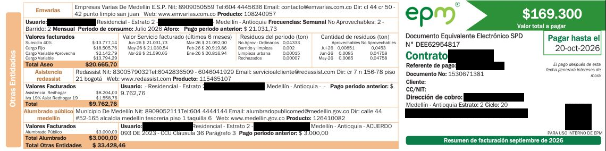

Consumo por servicio

| Servicios | Mes | Consumos | Valor a pagar (COP) |
|---|---|---|---|
| Acueducto | Septiembre | 6 m3 | 24.029,87 |
| Alcantarillado | Septiembre | 6 m3 | 17.717,27 |
| Energía | Septiembre | 130 kWh | 68.872,99 |
| Gas | Septiembre | 3,354 m3 | 6.643,73 |
| Otros servicios | Septiembre | 0 | 33.428,46 |
| Ajustes conceptos facturados | Septiembre | 0 | 3.679,31 |
| Acuerdos de pago | Septiembre | 0 | 14.928,71 |
| Ajuste al peso | Septiembre | 0 | -0,34 |
| Total del mes | 169.300 | ||
Proyección vs. factura
Comparo los kWh mensuales que proyecté en la página Equipos de mi casa con los kWh que realmente me facturó EPM.
| Concepto | kWh en el mes | Cómo se obtuvo |
|---|---|---|
| Proyección de equipos.html | 261 | 60,9 kWh por semana ÷ 7 días × 30 días |
| Factura EPM (septiembre) | 130 | Consumo de energía facturado |
| Diferencia | 131 | La proyección es aproximadamente el doble de la factura |
¿Por qué no coinciden?
La proyección sale de estimaciones (potencia de placa y horas de uso), mientras que la factura sale del medidor. Como la factura incluye toda la casa y mi tabla solo cuatro equipos, la proyección debería ser menor, no mayor. Por eso concluyo que mis estimaciones quedaron altas. Las causas más probables son:
- Computador: aporta 40 de los 60,9 kWh semanales (66 %). Los 500 W son la potencia máxima de la fuente; en uso normal consume bastante menos.
- Horas de uso: son promedios aproximados y la semana medida pudo ser más pesada que una semana típica.
- Nevera y olla arrocera: la nevera no funciona todo el tiempo (el compresor se apaga) y la olla consume su potencia máxima solo al cocinar, no al mantener caliente.
- Periodos distintos: la factura corresponde a septiembre y mi medición a otra semana.
Recomendaciones de ahorro para mi familia
En mi factura, cada kWh cuesta cerca de 530 COP (68.872,99 ÷ 130 kWh), así que cada kWh que ahorro se nota. Estas recomendaciones salen de mis datos:
- Reducir el uso del computador. Es el equipo que más pesa: 40 de los 60,9 kWh semanales (66 %). Si lo apago o lo dejo en suspensión cuando no lo uso y bajo una hora de uso al día, ahorraría unos 15 kWh al mes (≈ 7.900 COP).
- Desconectar la olla arrocera después de cocinar. Gasta 8,5 kWh por semana (≈ 36 kWh al mes) y la función de mantener caliente sigue consumiendo. Si recorto una cuarta parte de ese consumo, ahorraría unos 9 kWh al mes (≈ 4.800 COP).
- Cuidar la nevera. Funciona todo el día y consume 11,5 kWh por semana (19 % del total). Para que no trabaje de más: revisar que el empaque cierre bien, dejarla separada de la pared, no meter comida caliente y no abrirla innecesariamente.
- Apagar el televisor del todo. Consume poco (0,9 kWh por semana), pero apagarlo con el botón o desconectarlo evita el consumo en espera, y es un hábito fácil para toda la familia.
- Ahorrar agua. Acueducto y alcantarillado suman 41.747,14 COP (25 % de la factura) por solo 6 m3. Duchas más cortas y revisar que no haya goteos en llaves ni sanitarios pueden bajar ese valor.
Los ahorros en pesos son aproximados: se calculan con las estimaciones de equipos.html y el valor por kWh de mi factura.